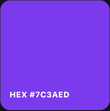

This guide explains the ToolsNowPro color picker using values you can reproduce. It combines a HEX/RGB converter with a text contrast checker. Set the foreground and background colors to see WCAG AA and AAA results, preview text, and copy CSS declarations. There is no image upload or automatic palette generator.
Convert one color in both directions
- Enter
#7C3AEDin the HEX field. - The channels should read R = 124, G = 58, B = 237.
- Copy RGB to get
rgb(124, 58, 237). - Change the RGB fields to 255, 255, 255. The HEX field should become
#FFFFFF.
| HEX input | RGB result | What to check |
|---|---|---|
#000000 | rgb(0, 0, 0) | All channels at their minimum |
#FFFFFF | rgb(255, 255, 255) | All channels at their maximum |
#F80 | rgb(255, 136, 0) | Short HEX expands to #FF8800 |
HEX stores each channel in base 16: 7C = 7 × 16 + 12 = 124. RGB writes the same channels in decimal. These two formats describe the same color; converting between them does not make it lighter or darker.

Copy the value into a real button
.primary-button {
background: #7C3AED;
color: #FFFFFF;
}Test the button with its actual label, size, hover state, and focus outline. A color preview alone cannot show whether the full interface is readable.
Check foreground/background contrast
The WCAG text contrast criterion uses a minimum of 4.5:1 for ordinary text and 3:1 for large text. Large text means at least 18 point, or 14 point when bold. These thresholds concern text, not QR-code scanning.
Using the WCAG relative-luminance formula, white against #7C3AED is approximately 5.70:1, while white against #FF8800 is approximately 2.39:1. The first meets the ordinary-text threshold; the second does not. These are calculated color-pair ratios, not a complete accessibility assessment.
Matching a screenshot
Use “Pick from screen” when your browser supports the EyeDropper API. The browser asks you to select a visible pixel; cancel to keep the current color. If the button is unavailable, use the native color dialog or sample in your image editor and paste the HEX value. No screenshot file is uploaded.
Sample a flat interior pixel rather than an antialiased text edge, a shadow, or a compressed boundary. For a website you control, inspect the CSS declaration for the original value. A screenshot can be affected by compression and color profiles.
Limits and troubleshooting
Use three or six hexadecimal digits. Alpha formats such as #7C3AED80, HSL, and named colors are not supported in the HEX field. An invalid input leaves the last valid preview in place. RGB inputs are limited to integer channel values from 0 to 255.
If copying fails, select the field and copy manually; browser clipboard permissions can block automatic copying. Display brightness and surrounding colors can change how a color looks even when its numerical value is identical.
Check these conversions
Try the three values above and copy the format your stylesheet uses.
Open Color Picker →